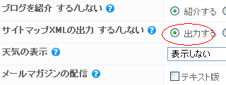

googleサイトマップの作成
googleのサイトマップ作成は早い段階でしておきましょう。
サイトマップには、グーグルやヤフーの「検索ロボット用のもの」と「ブログの訪問者様用」の２種類があります。当ブログではこんな感じで作成しています。
検索エンジンのロボット用のサイトマップ：sitemap.xml
ブログ訪問者さま用のサイトマップ：サイトマップ
sitemap.xml などの検索ロボット用のサイトマップを作成しておくと、クロールされずらい深い階層の記事でもインデックス（登録）されやすくなります。
XML形式のサイトマップを作成
サイトマップのなかでも、xml形式のものが一般的な形式となっており、グーグルやヤフーなど、たいていの検索エンジンで対応しています。
XML形式のサイトマップの記述ルールを参照すれば自分でも作れそうな気がしますが、シーサーブログの場合は初心者簡単にボタンひとつで作ってくれるので楽です。
シーサーブログでXMLのサイトマップを作成する場合、ブログ設定のところにサイトマップを出力するかしないかという欄があるのですが、そこを出力するに設定すると、１日ぐらいでグーグルのサイトマップが簡単に出来上がります。

無料ブログサービスによって、自動的に出力してくれるところとそうでないところがあるようなので、使っているブログサービスのヘルプ欄を参照してみるといいと思います。
自動的に出力してくれない無料ブログでサイトマップを作成する場合、xml-sitemapsというところを利用すると便利です。
自力でルートディレクトリにアップロードできる無料ブログサービスなら、こちらの方を使ってみてはいかがかと思います。
シーサーブログでサイトマップを出力した場合、自分のブログのＵＲＬにsitemap.xmlをつけるとみれるようになります。反映には、サイトマップを出力するに設定してから一日ぐらいかかるようです。
作成したサイトマップをgoogleに送信
この出来上がったサイトマップをgoogleに送信してやれば、検索ロボットがブログ全体を把握しやすいようになってたくさんの記事を登録してもらえるようです。
送信のしかたは、googleの場合、ウェブマスターツールをつかってサイトマップを追加することになります。
せっかくサイトマップを作っても、グーグルに送らないと意味がないので忘れずに送信しておきましょう。
ちなみに、ルートディレクトリにアクセスできるホームページなどで作成している場合、robots.txt でサイトマップの位置を知らせることができます。記述する形式は次のようにロボットテキストに記入しましょう。
Sitemap: http://www.example.co.jp/sitemap.xml
上の sitemaps.org によると、サイトマップの url は完全な形で記入する必要があるようです。
ヤフーのサイトマップを作成する場合
また、ヤフーのサイトマップを作成する場合は、外国のヤフーサイトで、Yahoo! Site Explorerなどがありますが、あまり効果はないようです。(追記：日本ベータ版ができたようです。)
これらグーグルやヤフーのサイトマップ作成の是非についてはいろいろあります。
そもそもインデックスされなければ、その理由を考え、修正することでワンランク上のブログになるチャンスがあります。
けれども、サイトマップ作成によってなんでもかんでもインデックスされだすと、どのページが検索エンジンに認められているのかとかわからなくなるって人もいるようです。
でも、たいていのケースなら、たくさんインデックスされた方がお得です。
グーグルの検索ロボット用のサイトマップを作成したら、もうひとつの訪問者様用の人間用サイトマップも作成しておくと便利だと思います。
ただ、構成を考えて作成するホームページとは違い、その時々で書きたいことを書きつらねるブログの場合はそれほど必要ないかもしれません。
戻る - ブログ開設後のサイト登録やブログ設定
- サイトマップの作り方（ウェブマスターツール）
グーグル用のサイトマップを作成したら、グーグルのウェブマスターツールをつかってグーグルに送信します。 そうするとグーグルの検索ロボットが自分のブログの構造を認識しやすくなり、自分のページが登録されや... - 無料ブログのサイトマップを丁寧の作成
このブログでは無料で利用できるグーグルのアクセス解析のグーグルアナリティクスを利用しています。 このアクセス解析を見てみると、やはりサイトマップのクリック率がどのブログでも高いようです。 このブロ...